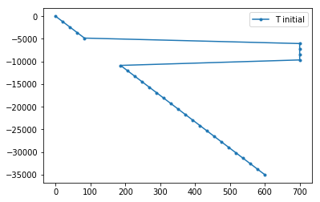
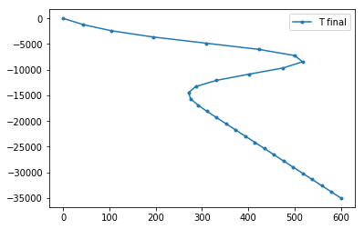

This page was generated from source/notebooks/day-2/diffadv.ipynb.
Interactive online version:

Heat diffusion + advection¶
If we add advection and internal heat generation to our heat equation, we get
\[\rho C_p \left(\frac{\partial T}{\partial t} + v_x\frac{\partial T}{\partial x}\right) = k \frac{\partial^2 T}{\partial x^2} + H\]
Leaving only the time derivative on the left-hand side,
\[\frac{\partial T}{\partial t} = \frac{k}{\rho C_p} \frac{\partial^2 T}{\partial x^2} + \frac{H}{\rho C_p} - v_x\frac{\partial T}{\partial x}\]
Do¶
- Write the finite difference approximation for (i.e. discretize) the diffusion-advection equation. Use forward difference in time and central difference in space. Write the expression in form \(T_i^{q+1} = \ldots~T^q~\mathrm{terms~only~on~this~side}~\ldots\)
- Modify the intrusion code below (or use the one you modified
previously):
- Add variables that store the internal heat production \(H\) and the advection velocity \(v_x\) (what are suitable values?)
- Modify the line within the time loop that calculates the next valuer of \(T\): include the terms for heat generation and advection
- Start with \(H=0\) and \(v_x = 0\). Gradually change these values. How does the results change as you give non-zero values for these? What happens if \(v_x > 0\) compared to \(v_x < 0\)? What if \(v_x\) has a large (positive or negative) value?
- Extra:
- Remove the initial hot intrusion. Instead, add spatially variable
internal heat generation. For this, you will need to introduce new
numpy array (of size
nx), fill it with values of internal heat generation, and use it (H[ix]instead ofH) when you calculate the new temperature value. - Calculating heat flow:
- Heat flow is defined as \(q=k\frac{dT}{dx}\). Write an approximation for \(q\) by replacing the derivative with a finite difference expression.
- Modify the code so that you create an array (of size
nt) that stores surface heat flow values each time step. Within the time loop, calculate each time step the heat flow between two topmost grid points. - After the time loop, plot the recorded surface heat flow history.
- Remove the initial hot intrusion. Instead, add spatially variable
internal heat generation. For this, you will need to introduce new
numpy array (of size
In [15]:
import numpy as np
import matplotlib.pyplot as plt
yr2sec = 60*60*24*365.25 # num of seconds in a year
# Set material properties
rho = 2900 # kg m^-3
Cp = 900 # J kg^-1 K^-1
k = 2.5 # W m^-1 K^-1
# Set geometry and dimensions
L = 35e3 # m
nx = 30 # -
dx = L / (nx-1) # m
print("dx is", dx, "m")
silltop = 5e3 # m
sillbott = 10e3 # m
# Set total time and time step
t_total = 0.1e6 * yr2sec # s
dt = 1e4 * yr2sec # s
nt = int(np.floor(t_total / dt)) # -
print("Calculating", nt, "time steps")
# Set boundary temperature values and intrusion temperature
Tsurf = 0.0 # deg C
Tmoho = 600.0 # deg C
Tintrusion = 700.0 # deg C
# Create arrays to hold temperature fields
Tnew = np.zeros(nx)
Tprev = np.zeros(nx)
# Create coordinates of the grid points
x = np.linspace(0, L, nx)
# Generate initial temperature field
for ix in range(nx):
if (x[ix] < sillbott) and (x[ix] > silltop):
Tprev[ix] = Tintrusion
else:
Tprev[ix] = x[ix] * (Tmoho - Tsurf) / L
# Plot initial temperature field
plt.plot(Tprev, -x, '.-', label='T initial')
plt.legend()
plt.show()
# Start the loop over time steps
curtime = 0
while curtime < t_total:
curtime = curtime + dt
# boundary conditions
Tnew[0] = Tsurf
Tnew[nx-1] = Tmoho
# internal grid points
for ix in range(1, nx-1):
Tnew[ix] = (k * (Tprev[ix-1] - 2.0*Tprev[ix] + Tprev[ix+1]) / dx**2) * dt / (rho * Cp) + Tprev[ix]
# copy Tnew to Tprev
Tprev[:] = Tnew[:]
# Plot the final temperature field
plt.plot(Tnew, -x, '.-', label='T final')
plt.legend()
plt.show()
dx is 1206.896551724138 m
Calculating 10 time steps

